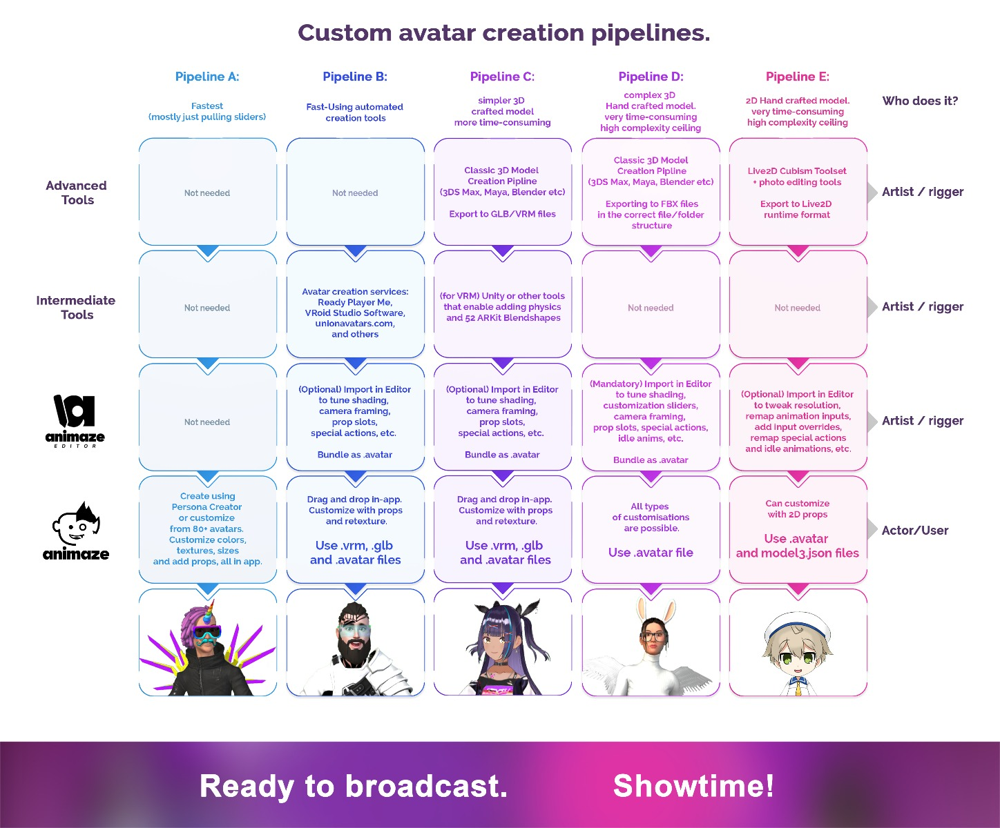

Importing Custom Models
The Animaze platform enables casual users and all level artists to import their own custom models. Use the graph down below to determine what pipeline best suits you in regards to your know-how, desired avatar complexity (shading, animation, style) and effort willing to spend.

Further, if you've chosen your desired pipeline, here are the starting points you can follow:
- Pipeline A - Avatar Customizations and Animaze Personas (Character Creator)
- Pipeline B - VRM, Ready Player Me and Union Avatars
- Pipeline C - VRM and GLB/GLTF
- Pipeline D - FBX
- Pipeline E - Live2D